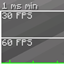

MODS
Devido à má otimização do jogo em sua versão Java, utilizo e recomendo alguns mods para aprimorar a
qualidade da experiência de jogo.
Fabric e Fabric API
O Fabric é o sistema que permite rodar mods no Minecraft, enquanto o Fabric API é um conjunto de ferramentas que muitos desses mods precisam para funcionar corretamente.

EntityCulling
Renderização mais inteligente, menos desperdício de processamento e ganho perceptível de desempenho, especialmente em áreas com muitas entidades.
Dynamic FPS
Uso muito mais eficiente do computador, com redução significativa de consumo de CPU e GPU quando o jogo não está em foco. tudo isso sem afetar a experiência enquanto você está jogando ativamente.

FerriteCore
Redução no uso de memória, menos travamentos e quedas causadas por falta de RAM, carregamentos mais estáveis e melhor desempenho geral, principalmente em modpacks grandes e complexos.
Lithium
Desempenho mais consistente e eficiente, com ticks mais rápidos, menor uso de CPU e uma jogabilidade mais fluida e responsiva, sem qualquer alteração na experiência original do jogo.
Sodium
FPS muito mais alto, menos travamentos durante a jogatina e uma renderização mais estável, mantendo o visual original do jogo e boa compatibilidade com outros mods.